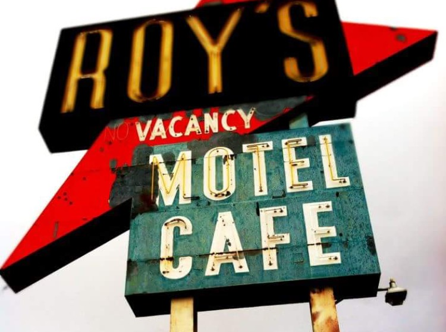

Roy's Roadside Cafe.
Here we will treat you to the best that America has to offer in the way of authentic and local cuisne.
Everything we made in our restaraunt is organic and locally sourced, garaunting us the freshest and finest ingriendients.
Located on the outskirts of Wyattsville, Roy's has been serving the public since the mid 1950's.